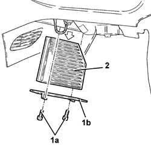

5010B09 purifying filter (antipollen) filter element - replace
- Path
- Procedures > 50 AUXILIARY UNITS > 5010 CLIMATE CONTROL - MISCELLANEOUS > 5010B heating/ventilation air pipes and ducts > 5010B09 purifying filter (antipollen) filter element - replace
- Kind
- repair procedure (removal / refitting; the operation number is the code)
- Applies to
- all engines; all production periods
- Interactive page
- https://sloeber94.github.io/elrnDB-fDbl/en/#/2584795
Applies to: all engines; all production periods
 Removing
Removing
 Refitting
Refitting1. Working in the passenger compartment, passenger side, undo the fixing bolts (1a) and remove the cover (1b).
2. Withdraw the filter element from the cleaning filter.

Applies to: all engines; all production periods
Refitting
RemovingFit a new filter element in its seating.
Fit the cover and fix it using the bolts.
Topics that link to this page (12)
- L02 CLIMATE CONTROL NOT WORKING / (NO AIR DELIVERY)
- U10 UNPLEASANT CLIMATE CONTROL ODOURS
- U11 UNPLEASANT HEATER ODOURS
- 0010K20 20,000km service coupon, emission control version
- 0010K40 40,000km service coupon, emission control versions
- 0010K60 60,000km service coupon - emission control versions
- 0010K80 80,000km service coupon - emission control versions
- 0010M01 100,000km service coupon, emission control versions
- 0010M20 120,000km service coupon, emission control versions
- 0010M21 120000 km service coupon for emission control versions with air conditioner
- 0010M40 140,000km service coupon - emission control versions
- 0010M60 160,000km service coupon - emission control versions